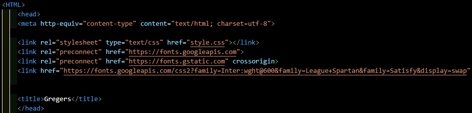

HTML
HTML er standarden for at lave hjemmesider.
HTML står for:
H - Hyper
T - Text
M - Markup
L - Language
HTML's rolle er at beskrive strukturen af en hjemmeside. Alle ting du ser på denne hjemmeside (knapper, bokse, bogstaver)
kan findes i HTML koden. HTML kommunikerer med din browser for at vise alle disse ting.
Den første version af HTML "HTML 1.0" blev udgivet i 1993 af Tim Berners-Lee efter 3 år i produktion. Siden da
er der blevet udgivet 4 nye versioner af HTML, navngivet i kronologisk rækkefølge. Den nyeste er HTML 5, som blev
udgivet den 28. oktober 2014.
Eksempel

Hvis vi kigger på HTML koden for denne hjemmeside vist ovenfor, kan vi se at det øverste og første der står, er
<HTML>.
Dette er "the root element" af en HTML side, altså at det er det første man koder ind.
Det næste der står er
<head>. Dette indeholder vigtige informationer som hvilke fonts jeg vil bruge og
hvad siden hedder oppe i fanen.
HTML er dog ikke alene om at lave en hjemmeside, de fleste hjemmesider gør også
brug af Javascript og CSS, som du kan læse mere om i min logbog.
Hvis du vil læse mere om HTML, så bare
tryk her.